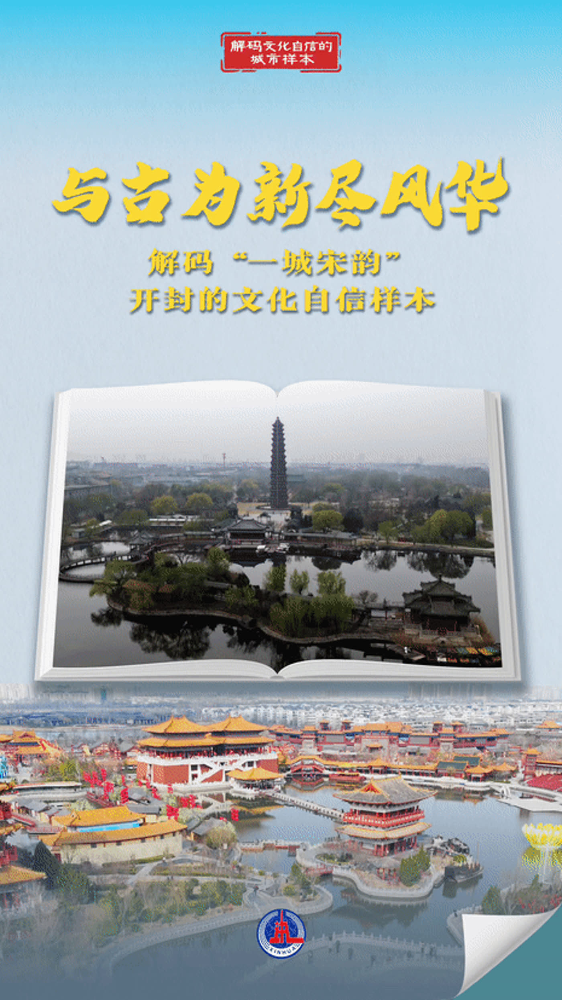
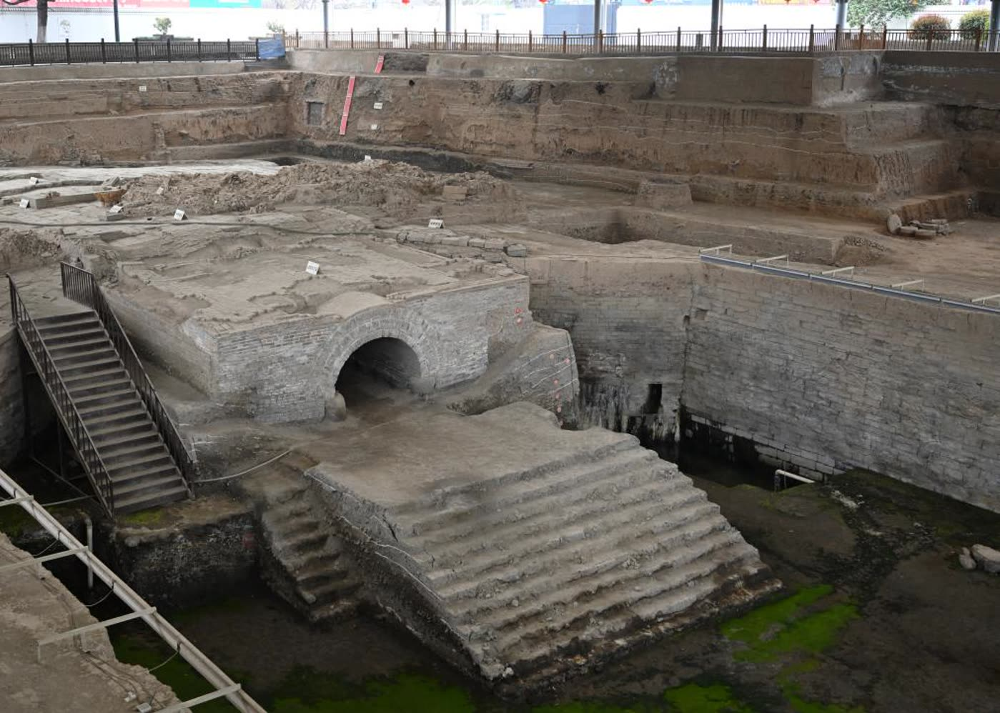
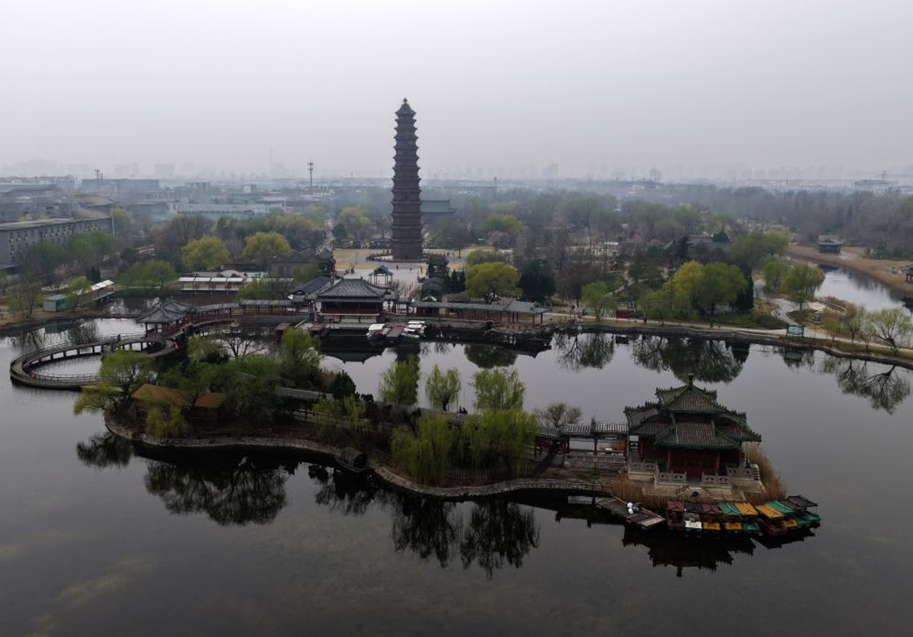
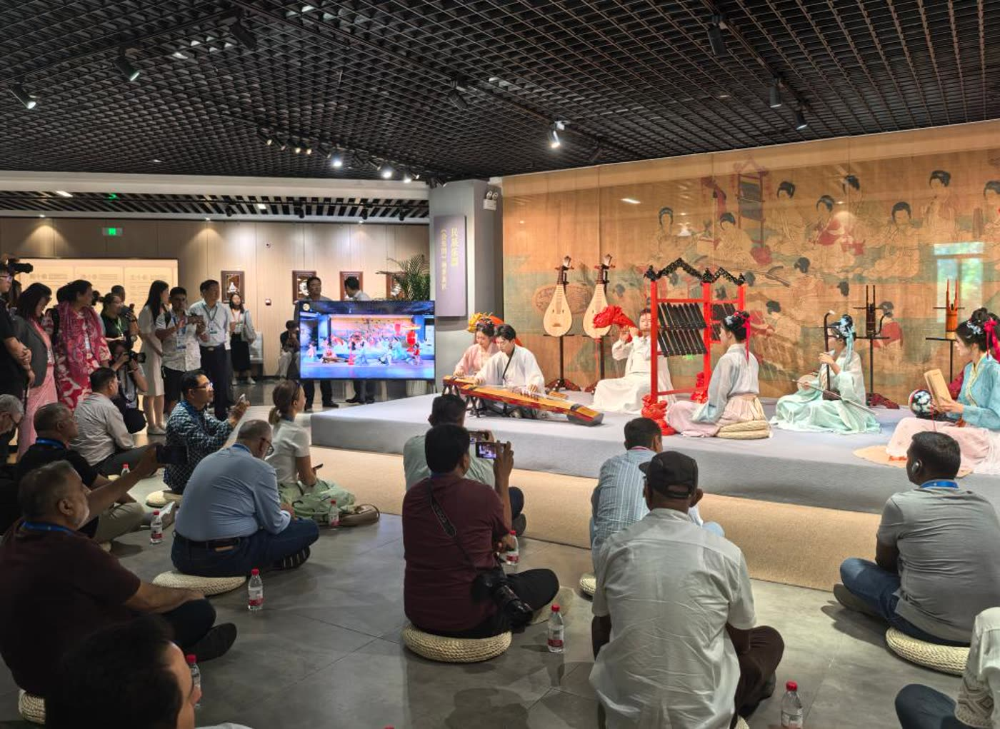

解码文化自信的城市样本丨与古为新尽风华——解码“一城宋韵”开封的文化自信样本
- 发布机关
- 新华网（人民网河南频道同文转载）
- 发布日期
- 2026-04-06
- 效力状态
- 实践报道
- 行政层级
- 地方级
- 地 区
- 开封
- 资料来源
- 新华网（人民网河南频道同文转载）
新华网报道以“一城宋韵”开封为样本，解码历史文化名城在保护传承与活化利用之间的实践路径。文章与开封市宋都古城国家文物保护利用示范区建设（汴政〔2024〕14号）相呼应，呈现老城保护、街区更新与文旅融合的组合做法。
现场照片
以下为来源发布方发布的现场照片，版权归原发布方/摄影者所有，本站仅作索引展示；点击可跳转原始链接。




解码文化自信的城市样本丨与古为新尽风华——解码“一城宋韵”开封的文化自信样本 党政 党网 · 时政 人事 反腐 理论 党史 党建 要闻 经济 · 科技 社会 · 法治 文旅 · 体育 健康 · 生活 国际 军事 大湾区 台湾 教育 科普 人民锐评 互动 领导留言板 强国论坛 828企业服务平台 人民建议 人民投诉 “大思政课”云平台 人民防非 观点 社论 任仲平 任平 仲音 人民论坛 人民时评 今日谈 望海楼 金社平 寰宇平 钟声 和音 金台随笔 暖闻热评 国际论坛 人民网观点 可视化 视频 图片 图解 灵境·人民艺术馆 聚力微光 地方 京 津 冀 晋 蒙 辽 吉 黑 沪 苏 浙 皖 闽 赣 鲁 豫 鄂 湘 粤 桂 琼 渝 川 黔 滇 藏 陕 甘 青 宁 新 鹏 雄安 民文 English 合作网站 毛主席纪念堂 周恩来纪念网 邓小平纪念网 中央社会工作部 工会新闻网 中国侨联 学习强国 中共中央党史和文献研究院 全国哲学社科工作办 旗帜网 国家保密局 科普中国 文化企业社会责任报告发布平台 中国国民党革命委员会 “人民消费”中消协教育课堂 人工智能 传播内容认知全国重点实验室 人民审校 人民智媒 智能写作 白泽 人民网+ 中国共产党新闻网 领导留言板 强国论坛 人民视频 人民日报报系 人民日报 人民日报海外版 中国汽车报 中国能源报 健康时报 证券时报 国际金融报网 讽刺与幽默 中国城市报 新闻战线 人民论坛 环球人物 中国经济周刊 民生周刊 国家人文历史 人民周刊 人民数字 旗下网站 国家重点实验室 环球网 海外网 人民图片 人民视觉 人民网研究院 人民网 解码文化自信的城市样本丨与古为新尽风华——解码“一城宋韵”开封的文化自信样本 2026年04月07日08:07 | 来源： 新华社 原标题：解码文化自信的城市样本丨与古为新尽风华——解码“一城宋韵”开封的文化自信样本 河南开封，这座黄河岸边的“八朝古都”，数千年来的兴衰都和水息息相关。历史上，这里曾凭一渠汴水，成就“汴京富丽天下无”的盛世繁华，令人心向往之；也曾因摆荡的黄河几度被掩埋，屡毁屡建，历尽沧海桑田。 现如今，上承汉唐、下启明清而影响深远的“宋文化”，依然氤氲在开封的街头巷尾。这份穿越千年的厚重底蕴，不仅塑造了城市从容雅致的文化气质，更持续激活高质量发展的“一池春水”。 溯水寻城：赓续千载文脉 沿着中轴线行走在开封，脚下踩的不只是泥土，更是时间。 “历史上，受黄河泛滥和战乱等因素影响，开封曾多次被泥沙掩埋，形成世所罕有的‘城摞城’奇观。”在州桥遗址考古发掘现场，开封市文物考古研究院院长王三营指着清晰的地层剖面介绍，“在现代开封城下3至12米处，还上下叠摞着6座古城址的文化层。” 州桥，是北宋东京城御街与大运河（汴河段）交叉点上的标志性建筑。 “北宋中晚期，每到放榜之日，赴京赶考的举子们便云集于此，翘首以盼金榜。那时的州桥是承载士人理想、映照时代风云的文化高地和精神标识。”望着州桥，王三营脑海中总会浮现浪漫的联想，“或许我们和苏轼、王安石，脚踩过同一块青砖呢。” 2018年至2022年，河南省文物考古研究院联合开封市文物考古研究所（现“开封市文物考古研究院”）对州桥遗址开展持续性考古发掘，并出土北宋时期巨幅石雕祥瑞壁画。《东京梦华录》中所记载的“近桥两岸皆石壁，雕镌海马水兽飞云之状”的胜景，重现在世人眼前。 图为州桥遗址考古发掘现场（2026年3月23日摄）。新华社记者 李嘉南 摄 2025年5月，习近平总书记在河南考察时指出：“中华文明博大精深，值得我们多到实地去寻溯。” 随着州桥及汴河遗址公众考古研学示范基地建成开放，越来越多的孩子们来到考古探方边，感悟千年风雅。 从文物保护到文旅融合，从城市规划到民生改善，在开封，文化渗透于经济社会发展的方方面面。 近20年来，开封市围绕古城风貌保护，先后编制了一系列规划文件，始终坚持“小式建筑、限高15米、灰色基调、宋风宋韵”的总体风格。古城保护与城市更新，于开封而言，不是取舍，而是共兴。 图为开封铁塔（2026年3月23日摄，无人机照片）。新华社记者 李嘉南 摄 铁塔、繁塔等“宋文化”地标依然挺立，双龙巷、珠玑巷等历史上知名的街巷韵味十足，行走在开封，仿佛漫步于图籍中、徜徉在古今间。 纵然历史上的汴河已化为故道，它流淌出的悠悠文韵却从未“断流”，润泽着一代代开封人的心田。 以文兴业：重绘清明上河 “各位大人好，欢迎来到开封府参加大宋同签会……”开封府景区全息剧场内，依托宋画创排的《闸口盘车案》正在上演，虚实交错间，赢得观众阵阵掌声。 “太震撼了！无论是数字化复原的街道景观，还是全息立体成像的‘大宋官员’，都让人仿佛穿越千年。”广西游客伍玥说。 开封府外的码头边，游船已满载游客，沿着波光粼粼的大宋御河悠然驶去。河道两岸，包公祠、清明上河园、天波杨府等景区串珠成链。 2026年3月23日，游客在开封清明上河园景区游玩（无人机照片）。新华社记者 李嘉南 摄 “一城宋韵半城水”，在开封，水脉蕴文脉，水运即城运。 “我小时候，开封城内的水系并不像现在这样整体连通。”作为土生土长的本地人，开封市文化旅游投资集团有限公司工作人员王振豫见证了开封“一渠六河”综合治理工程全线通水，“如今的老城区内，包公湖、龙亭湖、铁塔湖等五湖贯通，一川清流、两岸锦绣。” 2025年5月，习近平总书记在河南考察时指出：“文旅融合前景广阔，要推动文旅产业高质量发展，真正打造成为支柱产业、民生产业、幸福产业。” 殷殷嘱托，言犹在耳。近年来，开封依托丰厚的“宋文化”资源，主动求新求变，沿城内水系打造景观带、文化带、旅游带，不断擦亮“宋文化看开封”的金字招牌。一幅水光潋滟的“新时代清明上河图”已然在开封铺展开来—— 清明上河园中，沉浸式“餐饮+演艺”项目《清明上河·宋宴》叫好叫座，游客们在雅乐之中品味千年食趣；万岁山武侠城里，超3000场实景演出轮番上演，让人直呼“过瘾”；华灯初上时，鼓楼夜市的叫卖声此起彼伏，尽显人间烟火气…… 2025年3月6日，游客在开封清明上河园景区游玩（无人机照片）。新华社记者 李嘉南 摄 据开封市文化广电和旅游局测算，2026年春节假期，开封全市累计接待游客1073.56万人次，实现旅游综合收入75.8亿元，按可比口径同比分别增长6.03%和7.12%。开封已成为中原地区最具吸引力的旅游目的地之一。 “在龙头景区的带动下，开封已逐步构建起涵盖古都游、民俗游、红色游、乡村游的全域旅游产品体系，让游客从‘打卡一个点’转向‘逛遍一座城’，推动城市从‘现象级爆红’稳步走向‘可持续长红’。”开封市文化广电和旅游局主要负责人说。 向新而行：澎湃发展动能 马年春节前夕，一场别出心裁的民族乐器复刻展演在中国（河南）自贸区国际艺术品保税仓上演——古装打扮的乐师们手指翻飞，悠扬的旋律声声入耳，让人真切感受到“八音克谐”的美妙意境。 “我们依据古画《合乐图》，复刻出琵琶、箜篌等19件乐器，并由专业演奏人员进行情景式演绎。”这一展演的主创方之一、深圳市佳音王科技股份有限公司相关负责人介绍，这一“乐器复刻+非遗展演+音乐创作”的模式，正推动民族乐器从产品出口转向文化IP（知识产权）输出。 2025年7月26日，上海合作组织媒体智库峰会与会嘉宾在中国（河南）自贸区国际艺术品保税仓观看民族乐器复刻展演。新华社记者 袁月明 摄 2025年全国两会期间，习近平总书记在参加江苏代表团审议时强调“以文化赋能经济社会发展”。 古都开封，高扬推动高质量发展的文化之帆，不断加快走向世界的步伐。 “2021年8月，第二批国家文化出口基地名单公布，中国（河南）自由贸易试验区开封片区成功入选。”中国（河南）自由贸易试验区开封片区管委会常务副主任郑红英介绍，近年来，开封已逐步构建起全方位、多层次的文化产业国际化发展格局。 据悉，2025年中国（河南）自由贸易试验区开封片区文化产品进出口额达4.2亿元，同比增长641.3%。自开仓以来，这一片区累计文化贸易进出口总额已突破14亿元。 将目光投向更宏阔的未来，开封在守牢文化根基、激活文旅引擎的同时，也在积极谋篇布局，为城市发展积蓄新动能。 图为奇瑞汽车股份有限公司河南分公司生产车间（2026年3月23日摄）。新华社记者 李嘉南 摄 走进奇瑞汽车股份有限公司河南分公司生产车间，只见一派热火朝天的繁忙景象。伴随不停挥舞的机械臂，一辆辆汽车接连下线。不久后，它们便会通过距离生产基地不远的开封综合保税区直接出口。据介绍，平均每4分钟，就有一辆奇瑞汽车从开封“驶”向海外。 “开封正加快打造汽车制造、现代食品、文化旅游三个千亿级产业链。我们将坚定把制造业高质量发展作为主攻方向，构建具有开封特色的现代化产业体系。”开封市委主要领导同志充满信心地说。 春风吹过开封兰考东坝头，黄河在此处拐过最后一道弯，滔滔东去。正如焦裕禄当年在兰考战风沙、治盐碱时的那股劲，今日开封，正凭着这迎难而上、扎根群众的奋斗精神，在高质量发展的道路上勇毅前行。 伴着文化带来的蓬勃力量，这座不满足于“一眼千年”的城市，正一步一个脚印，在古与新、守与进的平衡中，不断跃迁。 记者：李俊、袁月明 海报制作：袁月明、李嘉南 (责编：黄莎、杨晓娜) 推荐阅读 以制度刚性约束权力任性（有所思） 干部乱作为，本质是有权任性、履职失范、用权失序。有的拍脑袋决策，无视程序，脱离实际；有的滥用权力，搞“选择性执法”“同案不同罚”；有的即便出了错，也缺乏自我纠正的勇气和机制。… 郑州四年吸引青年人才近百万人 河南郑州高新技术产业开发区一家企业的研发实验室里，30岁的杜振洋讲起最新的AI无人机研发方案，滔滔不绝，眼里有光。眼下，他的团队正攻坚AI自动化技术，团队研发的大载重无人机，直接服务500多家客户。… 推荐视频 绘说现代化丨“豫”见精彩 新春走基层 |“00后”的甜蜜“守艺” 新春走基层丨“泥咕咕”高飞 人民日报 人民网+ 手机人民网 领导留言板 人民视频 人民智云 --> 人民智作 热门排行 1 《数智赋能正能量生产传播态势报告》发布 2 阔别50载的双向奔赴！“孪生”妇好鸮尊… 4 留言板·观豫⑪｜电动车治理难题咋破？多… 5 传承文明拥抱春天 2026开封清明文化… 6 全省树立和践行正确政绩观学习教育座谈会… 7 河南淅川：以花为媒激活春日经济 8 郑州四年吸引青年人才近百万人 9 我国首款七吨级运投无人机首飞成功 10 三门峡陕州区：黑树莓“种”出乡村振兴新… 人民日报社概况 | 关于人民网 | 报社招聘 | 招聘英才 | 广告服务 | 合作加盟 | 供稿服务 | 数据服务 | 网站声明 | 网站律师 | 信息保护 | 人民日报违法和不良信息举报电话：010-65363263 举报邮箱： jubao@people.cn 人民网服务邮箱： kf@people.cn 违法和不良信息举报电话：010-65363636 举报邮箱： rmwjubao@people.cn 互联网新闻信息服务许可证10120170001 | 增值电信业务经营许可证B1-20060139 | 广播电视节目制作经营许可证（广媒）字第172号 信息网络传播视听节目许可证0104065 | 网络文化经营许可证 京网文[2020]5494-1075号 | 网络出版服务许可证（京）字121号 | 京ICP证000006号 | 京公网安备11000002000008号 人 民 网 股 份 有 限 公 司 版 权 所 有 ，未 经 书 面 授 权 禁 止 使 用 Copyright © 1997-2026 by www.people.com.cn. all rights reserved 关注 第一时间为您推送权威资讯 报道全球 传播中国 关注人民网，传播正能量
原文链接：https://www.news.cn/local/20260406/07652a19b0874253869119f03752f1db/c.html